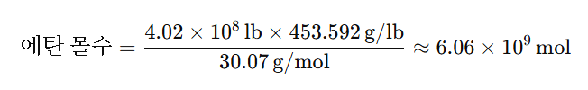
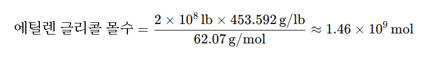
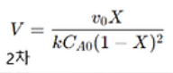

연간 4억 2백만 파운드의 에탄을 원료로 하여 연간 2억파운드의 에틸렌 글리콜을 생산하는 화학공장을 설계(미완..,)
문제: 연간 4억 2백만 파운드의 에탄을 원료로 하여 연간 2억파운드의 에틸렌 글리콜을 생산하는 화학공장을 설계하시오.
이 문제를 풀기 위해 필요한 것을 먼저 나열해보자.
---------------------------------------------------
1. 에탄 ->에틸렌 글리콜의 반응식
2. 개략적으로 공정도 그리기
3. 몰 수지식 세우기 ( 4억 2백만 파운드, 2억파운드는 몇 몰일까?)
4. 반응조건(P,T, 전화율)
5.에탄 -> 에틸렌글리콜 반응에 대해 조사하기 (등온인지, 등압인지 등등)
7. 어떤 반응기를 쓸 지 알아보기
----------------------------------------------------
1.에탄 -> 에틸렌글리콜의 반응식
에탄으로부터 에틸렌 글리콜을 생산하는 과정은 여러 단계의 반응을 거쳐야 한다.
에탄 -> 에틸렌 -> 에틸렌 글리콜로 산화하는 방식으로 진행된다. 다음은 주요 반응 단계이다.
- 에탄의 산화 탈수소화 반응: 에탄(C₂H₆)을 산화 탈수소화하여 에틸렌(C₂H₄)으로 만듭니다. C₂H₆ + O₂ →C₂H₄ + H₂O이 반응은 고온에서 촉매를 사용하여 진행되며, 열역학적으로 높은 활성화 에너지를 필요로 합니다.
- 에틸렌의 산화:
에틸렌(C₂H₄)을 다시 산화시켜 산화 에틸렌(C₂H₄O)으로 전환합니다.C₂H₄ + O₂ →C₂H₄O 이 과정에서는 은(Ag) 촉매를 사용하여 산소와 반응시키며, 주로 선택도를 높이는 것이 중요합니다. - 산화 에틸렌의 수화 반응:
마지막으로 산화 에틸렌을 수화하여 에틸렌 글리콜(C₂H₆O₂)을 만듭니다.C₂H₄O + H₂O →C₂H₆O₂이 반응은 산성 또는 염기성 촉매를 사용하여 물과 반응시킴으로써 이루어지며, 높은 반응성과 수율을 위해 적절한 반응 조건을 맞추는 것이 필요합니다.
에탄에서 에틸렌 글리콜을 생산하는 과정은 경제적으로 유리한 측면도 있지만, 각 단계에서 수율을 높이고 부산물을 최소화하는 것이 과제로 남아 있습니다.
1. C₂H₆ + O₂ → C₂H₄ + H₂O
2. C₂H₄ + O₂ → C₂H₄O
3. C₂H₄O + H₂O → C₂H₆O₂
전체적으로 보면 이렇게 된다. C₂H₆ + 2O₂ → C₂H₆O₂
즉 에탄 한분자와 산소 2분자가 반응하여 에틸렌글리콜 1분자가 만들어진다.
2.개략적으로 공정도 그리기
3.몰 수지식 세우기 ( 4억 2백만 파운드, 2억파운드는 몇 몰일까?)
4. 반응조건(P,T, 전화율)
- 온도: 약 500~700°C가 일반적인 범위입니다. 너무 낮으면 반응 속도가 느리고, 너무 높으면 부산물이 생성됩니다.
- 압력: 대체로 10~30 atm 범위에서 조절됩니다. 압력을 높이면 반응물 농도가 증가하여 반응이 촉진됩니다.
- 전화율:0.241로 고정
전화율에 영향을 미치는 주요 독립 변수는 온도, 압력, 반응물 농도, 체류 시간, 반응기 크기, 촉매의 특성, 혼합도, 유량 등입니다. 이 변수들은 상호작용을 통해 전화율을 결정하며, 반응기 설계와 운전 조건을 최적화하여 목표하는 전화율을 달성할 수 있습니다.
일단 온도는 600도로, 압력은 20atm으로 적정히 간주한다. 반응물 농도는 고정이고 혼합도는 완전혼합, 유량역시도 고정이므로 이제 반응기 크기만이 전화율에 영향을 미친다.
일단 반응을 살펴보면 에탄->에틸렌->에틸렌글리콜이다.
C2H6→C2H4+H2
2C2H4+O2+2H2O→2HOCH2CH2OH
자 이제 중요한 것은, 4억 2백만 파운드의 에탄으로 2억파운드의 에틸렌 글리콜을 생산하려면 전화율은 몇이어야 하는가이다.
위의 화학반응식에서 에틸렌 글리콜을 생산하기 위해 필요한 에탄의 양은 1:1 몰비로 추정할 수 있다.
몰 질량
- 에탄 = 30.07 g/mol
- 에틸렌 글리콜 = 62.07 g/mol


즉 전화율은 24%정도만 되어도 된다.
따라서 우리는 반응기에 에탄을 넣고 24%정도의 반응이 일어나도록 하는 조건을 찾을 것이다.
이제 최적의 온도와 압력 범위를 찾을 것이다. 이는 850도, 1atm 정도임을 알 수 있다.
에탄의 열분해 반응에서 온도가 높을수록 에틸렌의 수율이 증가하는 경향이 있습니다. 이 반응은 고온에서 진행되어야 하는데, 주 이유는 다음과 같습니다:
- 반응 속도 증가
- 에탄의 열분해 반응은 종말 속도 반응이므로, 온도가 증가할수록 반응 속도가 빨라져 에틸렌을 더 빨리 생성할 수 있습니다.
- 에틸렌 수율 증가
- 고온에서 에탄이 열적으로 불안정해지면서 에틸렌과 수소로 쉽게 분해됩니다. 하지만 온도가 너무 높아지면 에틸렌이 탄소나 메탄 등의 부산물로 추가 분해될 위험이 있어, 적절한 온도 범위(약 800–900°C)를 유지하는 것이 중요합니다.
- 공정 효율 향상
- 높은 온도에서 짧은 시간 안에 반응이 완료되므로 반응기의 크기나 반응 시간을 줄일 수 있어 경제성이 향상됩니다.
따라서 온도를 높이면 열분해 반응이 더 효과적으로 진행되지만, 최적의 온도 범위(일반적으로 850°C 전후)를 유지해야 불필요한 부산물의 생성을 억제하고 원하는 에틸렌의 수율을 극대화할 수 있습니다.
압력
에탄의 열분해 반응에서 낮은 압력이 최적입니다. 압력에 따른 영향은 다음과 같은 이유로 설명할 수 있습니다:
- 반응 특성
- 에탄의 열분해 반응 C2H6→C2H4+H2\text{C}_2\text{H}_6 \rightarrow \text{C}_2\text{H}_4 + \text{H}_2는 기체 분자의 수가 증가하는 분해 반응입니다. 라샤틀리에의 원리에 따라 압력을 낮추면 생성물의 기체 분자 수를 증가시키는 방향으로 반응이 진행되기 때문에, 낮은 압력에서 에틸렌 수율이 높아집니다.
- 부산물 억제
- 낮은 압력에서는 에틸렌이 추가 분해되어 탄소(카본)나 메탄 등의 부산물이 생기는 것을 억제할 수 있어, 고순도의 에틸렌을 얻는 데 유리합니다.
- 공정 효율
- 낮은 압력에서 반응을 진행하면 반응기 내부의 열과 압력 관리가 더 용이해져, 공정 효율과 경제성이 향상됩니다.
따라서, 에탄의 열분해 반응은 일반적으로 낮은 압력, 약 1 atm 이하에서 수행하는 것이 최적입니다.
850도 1atm에서 연간 4억 2백만 파운드의 에탄으로 2억파운드의 에틸렌 글리콜을 생성하는 CSTR을 설계하자. 이때 850°C (1123 K)에서의 속도상수 k는 4977 L/mol·s이고 r=k[C2H6]^이라고 볼 수 있다.
이차반응에서 CSTR의 설계식은 다음과 같으므로, 여기에 X=0.24를 대입하고
